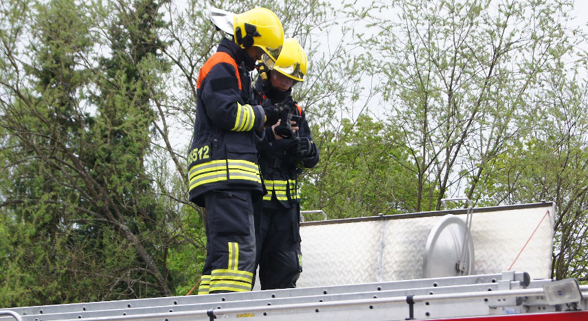
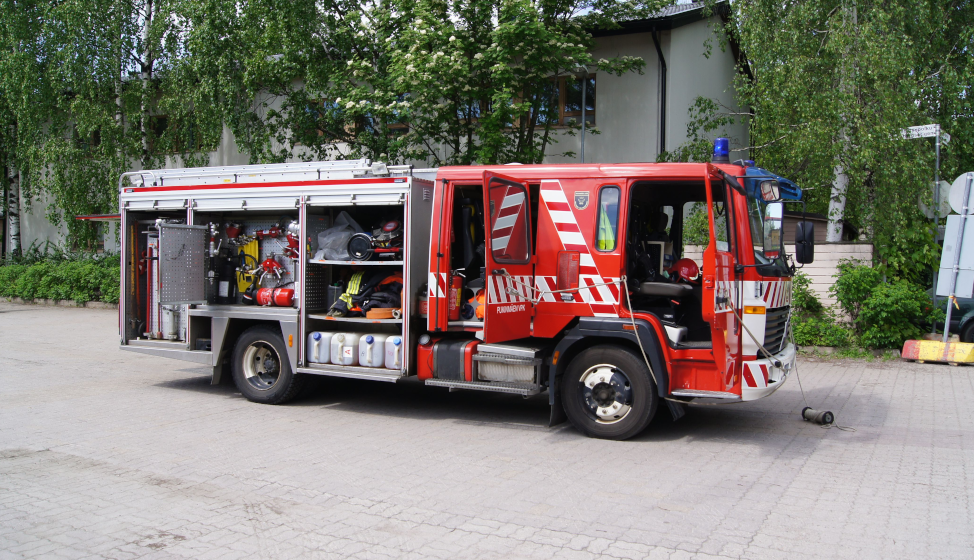
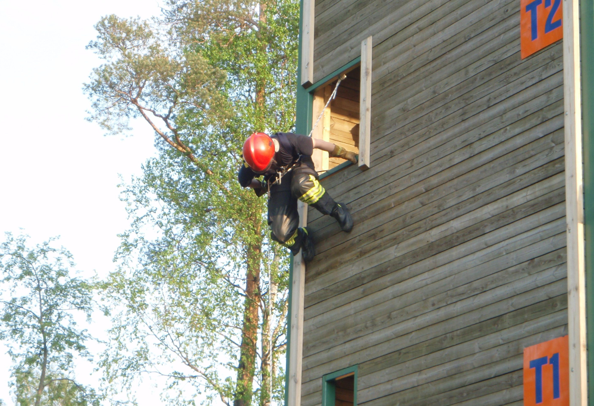

Harjoittelu ja koulutus
Hälytystoiminta vaatii sitoutumista ja säännöllistä harjoittelua. Ennen kuin pääsee mukaan hälytystehtäviin mukaan, on suoritettava tietyt koulutusohjelman mukaiset kurssit. Tärkeä osa palokuntatoimintaa ovat myös viikkoharjoitukset, joissa vahvistetaan ja ylläpidetään koulutuksessa saatua osaamista. Palokunnassa on sopimuksellisen hälytystoiminnan lisäksi myös monipuolista palokunnan toimintaa tukevaa harrastustoimintaa, johon pääsee mukaan ilman koulutusta.

Hälytykset
Palokunnan hälytysosasto vastaa VPK:lle annettujen sammutus- ja pelastustehtävien hoidosta siten kuin VPK:n ja Pelastuslaitoksen välisessä palokuntasopimuksessa on sovittu. Palokuntasopimuksessa määritellään muun muassa yksikön tavoitelähtöaika, henkilövahvuus sekä yksikön savusukelluskelpoisten jäsenten minimimäärä. VPK toimii Helsingin Kaupungin Pelastuslaitoksen reservipalokuntana.

Turvallisuusviestintä
Turvallisuusviestinnän tarkoituksena on että koti ja ympäristö on kaikille turvallinen paikka asua, liikkua, työskennellä, opiskella ja viettää vapaa-aikaa. Palokunnan tehtävänä on lisätä ihmisten ja organisaatioiden kykyä toimia turvallisesti. Siksi teemme turvallisuusviestintää, joka tarkoittaa esimerkiksi alkusammutuskoulutusta, paloturvallisuuskampanjoita, neuvontaa sosiaalisessa mediassa tai vaikkapa osallistumalla yhteisiin alueen tapahtumiin.

Yhdistystoiminta
Pukinmäen VPK on yhdistys, jonka toiminta on jäsentensä näköistä ja perustuu vapaaehtoisten työpanokseen. Aktiivisena jäsenenä voit olla mukana auttelemalla tapahtumajärjestelyissä, joihin kaivataan aina lisäkäsiä. Myös yhdistyksen hallitukseen ja luottamustehtäviin kaivataan usein uusia tekijöitä ja tuoreita näkökulmia. Yhdistyksemme mm. ylläpitää palokuntakiinteistöämme ja toimintamme tueksi vuokraamme juhlasaliamme.